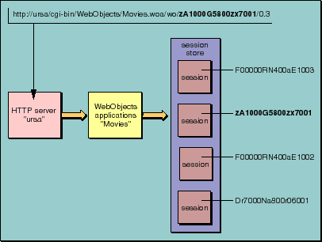

Table of Contents
Table of Contents  Next Section
Table of Contents
Next Section
Table of Contents  Previous Section
Previous Section

Figure 16. Request-Response Loop: Session Level
Encapsulates the state of a session. WOSession objects persist between the cycles of the request-response loop. WOSession objects store (and restore) the pages of a session, the values of session variables, and any other state that components want to persist throughout a session. The number of pages stored by the session object is dependent on the page-cache size set in WOApplication. Setting the page-cache size is described in the chapter "Managing State". Each session object is identified by a unique session ID, which is either reflected in the URL or stored in a cookie.
Provides the strategy or mechanism through which WOSession objects are made persistent. A WOSessionStore object stores session objects in the server or in the page, and restores them upon request by the application.
Table of Contents Next Section